Introduction
The BDZ algorithm was designed by Fabiano C. Botelho, Djamal Belazzougui, Rasmus Pagh and Nivio Ziviani. It is a simple, efficient, near-optimal space and practical algorithm to generate a family 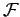 of PHFs and MPHFs. It is also referred to as BPZ algorithm because the work presented by Botelho, Pagh and Ziviani in [2]. In the Botelho's PhD. dissertation [1] it is also referred to as RAM algorithm because it is more suitable for key sets that can be handled in internal memory.
The BDZ algorithm uses r-uniform random hypergraphs given by function values of r uniform random hash functions on the input key set S for generating PHFs and MPHFs that require O(n) bits to be stored. A hypergraph is the generalization of a standard undirected graph where each edge connects 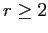 vertices. This idea is not new, see e.g. [8], but we have proceeded differently to achieve a space usage of O(n) bits rather than O(n log n) bits. Evaluation time for all schemes considered is constant. For r=3 we obtain a space usage of approximately 2.6n bits for an MPHF. More compact, and even simpler, representations can be achieved for larger m. For example, for m=1.23n we can get a space usage of 1.95n bits.
Our best MPHF space upper bound is within a factor of 2 from the information theoretical lower bound of approximately 1.44 bits. We have shown that the BDZ algorithm is far more practical than previous methods with proven space complexity, both because of its simplicity, and because the constant factor of the space complexity is more than 6 times lower than its closest competitor, for plausible problem sizes. We verify the practicality experimentally, using slightly more space than in the mentioned theoretical bounds.
The Algorithm
The BDZ algorithm is a three-step algorithm that generates PHFs and MPHFs based on random r-partite hypergraphs. This is an approach that provides a much tighter analysis and is much more simple than the one presented in [3], where it was implicit how to construct similar PHFs.The fastest and most compact functions are generated when r=3. In this case a PHF can be stored in approximately 1.95 bits per key and an MPHF in approximately 2.62 bits per key.
Figure 1 gives an overview of the algorithm for r=3, taking as input a key set 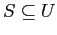 containing three English words, i.e., S={who,band,the}. The edge-oriented data structure proposed in [4] is used to represent hypergraphs, where each edge is explicitly represented as an array of r vertices and, for each vertex v, there is a list of edges that are incident on v.
| 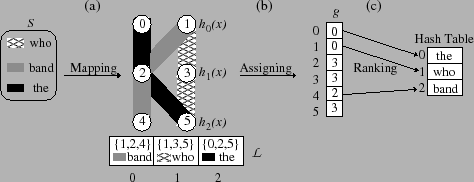 |
| Figure 1: (a) The mapping step generates a random acyclic 3-partite hypergraph |
| with m=6 vertices and n=3 edges and a list 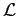 of edges obtained when we test |
| whether the hypergraph is acyclic. (b) The assigning step builds an array g that |
| maps values from [0,5] to [0,3] to uniquely assign an edge to a vertex. (c) The ranking |
| step builds the data structure used to compute function rank in O(1) time. |
The Mapping Step in Figure 1(a) carries out two important tasks:
- It assumes that it is possible to find three uniform hash functions h0, h1 and h2, with ranges {0,1}, {2,3} and {4,5}, respectively. These functions build an one-to-one mapping of the key set S to the edge set E of a random acyclic 3-partite hypergraph G=(V,E), where |V|=m=6 and |E|=n=3. In [1,2] it is shown that it is possible to obtain such a hypergraph with probability tending to 1 as n tends to infinity whenever m=cn and c > 1.22. The value of that minimizes the hypergraph size (and thereby the amount of bits to represent the resulting functions) is in the range (1.22,1.23). To illustrate the mapping, key "who" is mapped to edge {h0("who"), h1("who"), h2("who")} = {1,3,5}, key "band" is mapped to edge {h0("band"), h1("band"), h2("band")} = {1,2,4}, and key "the" is mapped to edge {h0("the"), h1("the"), h2("the")} = {0,2,5}.
- It tests whether the resulting random 3-partite hypergraph contains cycles by iteratively deleting edges connecting vertices of degree 1. The deleted edges are stored in the order of deletion in a list to be used in the assigning step. The first deleted edge in Figure 1(a) was {1,2,4}, the second one was {1,3,5} and the third one was {0,2,5}. If it ends with an empty graph, then the test succeeds, otherwise it fails.
We now show how to use the Jenkins hash functions [7] to implement the three hash functions hi, which map values from S to Vi, where 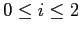. These functions are used to build a random 3-partite hypergraph, where 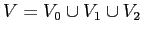 and 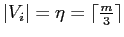. Let 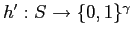 be a Jenkins hash function for 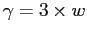, where w=32 or 64 for 32-bit and 64-bit architectures, respectively. Let H' be an array of 3 w-bit values. The Jenkins hash function allow us to compute in parallel the three entries in H' and thereby the three hash functions hi, as follows:
| H' = h'(x) |
| h0(x) = H'[0] mod 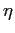 |
| h1(x) = H'[1] mod + |
| h2(x) = H'[2] mod + 2 |
The Assigning Step in Figure 1(b) outputs a PHF that maps the key set S into the range [0,m-1] and is represented by an array g storing values from the range [0,3]. The array g allows to select one out of the 3 vertices of a given edge, which is associated with a key k. A vertex for a key k is given by either h0(k), h1(k) or h2(k). The function hi(k) to be used for k is chosen by calculating i = (g[h0(k)] + g[h1(k)] + g[h2(k)]) mod 3. For instance, the values 1 and 4 represent the keys "who" and "band" because i = (g[1] + g[3] + g[5]) mod 3 = 0 and h0("who") = 1, and i = (g[1] + g[2] + g[4]) mod 3 = 2 and h2("band") = 4, respectively. The assigning step firstly initializes g[i]=3 to mark every vertex as unassigned and Visited[i]= false, 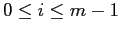. Let Visited be a boolean vector of size m to indicate whether a vertex has been visited. Then, for each edge 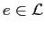 from tail to head, it looks for the first vertex u belonging e not yet visited. This is a sufficient condition for success [1,2,8]. Let j be the index of u in e for j in the range [0,2]. Then, it assigns 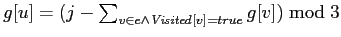. Whenever it passes through a vertex u from e, if u has not yet been visited, it sets Visited[u] = true.
If we stop the BDZ algorithm in the assigning step we obtain a PHF with range [0,m-1]. The PHF has the following form: phf(x) = hi(x)(x), where key x is in S and i(x) = (g[h0(x)] + g[h1(x)] + g[h2(x)]) mod 3. In this case we do not need information for ranking and can set g[i] = 0 whenever g[i] is equal to 3, where i is in the range [0,m-1]. Therefore, the range of the values stored in g is narrowed from [0,3] to [0,2]. By using arithmetic coding as block of values (see [1,2] for details), or any compression technique that allows to perform random access in constant time to an array of compressed values [5,6,12], we can store the resulting PHFs in mlog 3 = cnlog 3 bits, where c > 1.22. For c = 1.23, the space requirement is 1.95n bits.
The Ranking Step in Figure 1 (c) outputs a data structure that permits to narrow the range of a PHF generated in the assigning step from [0,m-1] to [0,n-1] and thereby an MPHF is produced. The data structure allows to compute in constant time a function rank from [0,m-1] to [0,n-1] that counts the number of assigned positions before a given position v in g. For instance, rank(4) = 2 because the positions 0 and 1 are assigned since g[0] and g[1] are not equal to 3.
For the implementation of the ranking step we have borrowed a simple and efficient implementation from [10]. It requires 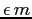 additional bits of space, where 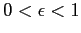, and is obtained by storing explicitly the rank of every kth index in a rankTable, where 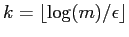. The larger is k the more compact is the resulting MPHF. Therefore, the users can tradeoff space for evaluation time by setting k appropriately in the implementation. We only allow values for k that are power of two (i.e., k=2bk for some constant bk in order to replace the expensive division and modulo operations by bit-shift and bitwise "and" operations, respectively. We have used k=256 in the experiments for generating more succinct MPHFs. We remark that it is still possible to obtain a more compact data structure by using the results presented in [9,11], but at the cost of a much more complex implementation.
We need to use an additional lookup table Tr to guarantee the constant evaluation time of rank(u). Let us illustrate how rank(u) is computed using both the rankTable and the lookup table Tr. We first look up the rank of the largest precomputed index v lower than or equal to u in the rankTable, and use Tr to count the number of assigned vertices from position v to u-1. The lookup table T_r allows us to count in constant time the number of assigned vertices in 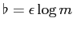 bits, where . Thus the actual evaluation time is 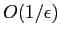. For simplicity and without loss of generality we let be a multiple of the number of bits used to encode each entry of g. As the values in g come from the range [0,3], then 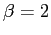 bits and we have tried equal to 8 and 16. We would expect that equal to 16 should provide a faster evaluation time because we would need to carry out fewer lookups in Tr. But, for both values the lookup table Tr fits entirely in the CPU cache and we did not realize any significant difference in the evaluation times. Therefore we settle for the value 8. We remark that each value of r requires a different lookup table //Tr that can be generated a priori.
The resulting MPHFs have the following form: h(x) = rank(phf(x)). Then, we cannot get rid of the raking information by replacing the values 3 by 0 in the entries of g. In this case each entry in the array g is encoded with 2 bits and we need 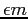 additional bits to compute function rank in constant time. Then, the total space to store the resulting functions is 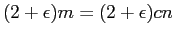 bits. By using c = 1.23 and 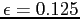 we have obtained MPHFs that require approximately 2.62 bits per key to be stored.
Memory Consumption
Now we detail the memory consumption to generate and to store minimal perfect hash functions using the BDZ algorithm. The structures responsible for memory consumption are in the following:
- 3-graph:
- first: is a vector that stores cn integer numbers, each one representing the first edge (index in the vector edges) in the list of incident edges of each vertex. The integer numbers are 4 bytes long. Therefore, the vector first is stored in 4cn bytes.
- edges: is a vector to represent the edges of the graph. As each edge is compounded by three vertices, each entry stores three integer numbers of 4 bytes that represent the vertices. As there are n edges, the vector edges is stored in 12n bytes.
- next: given a vertex
 , we can discover the edges that
contain following its list of incident edges,
which starts on first[] and the next
edges are given by next[...first[]...]. Therefore, the vectors first and next represent
the linked lists of edges of each vertex. As there are three vertices for each edge,
when an edge is iserted in the 3-graph, it must be inserted in the three linked lists
of the vertices in its composition. Therefore, there are 3n entries of integer
numbers in the vector next, so it is stored in 4*3n = 12n bytes.
, we can discover the edges that
contain following its list of incident edges,
which starts on first[] and the next
edges are given by next[...first[]...]. Therefore, the vectors first and next represent
the linked lists of edges of each vertex. As there are three vertices for each edge,
when an edge is iserted in the 3-graph, it must be inserted in the three linked lists
of the vertices in its composition. Therefore, there are 3n entries of integer
numbers in the vector next, so it is stored in 4*3n = 12n bytes.
- Vertices degree (vert_degree vector): is a vector of cn bytes that represents the degree of each vertex. We can use just one byte for each vertex because the 3-graph is sparse, once it has more vertices than edges. Therefore, the vertices degree is represented in cn bytes.
- Acyclicity test:
- List of deleted edges obtained when we test whether the 3-graph is a forest (queue vector): is a vector of n integer numbers containing indexes of vector edges. Therefore, it requires 4n bytes in internal memory.
- Marked edges in the acyclicity test (marked_edges vector): is a bit vector of n bits to indicate the edges that have already been deleted during the acyclicity test. Therefore, it requires n/8 bytes in internal memory.
- MPHF description
- function g: is represented by a vector of 2cn bits. Therefore, it is stored in 0.25cn bytes
- ranktable: is a lookup table used to store some precomputed ranking information. It has (cn)/(2^b) entries of 4-byte integer numbers. Therefore it is stored in (4cn)/(2^b) bytes. The larger is b, the more compact is the resulting MPHFs and the slower are the functions. So b imposes a trade-of between space and time.
- Total: 0.25cn + (4cn)/(2^b) bytes
Thus, the total memory consumption of BDZ algorithm for generating a minimal perfect hash function (MPHF) is: (28.125 + 5c)n + 0.25cn + (4cn)/(2^b) + O(1) bytes. As the value of constant c may be larger than or equal to 1.23 we have:
| c | b | Memory consumption to generate a MPHF (in bytes) |
|---|---|---|
| 1.23 | 7 | 34.62n + O(1) |
| 1.23 | 8 | 34.60n + O(1) |
| Table 1: Memory consumption to generate a MPHF using the BDZ algorithm. |
Now we present the memory consumption to store the resulting function. So we have:
| c | b | Memory consumption to store a MPHF (in bits) |
|---|---|---|
| 1.23 | 7 | 2.77n + O(1) |
| 1.23 | 8 | 2.61n + O(1) |
| Table 2: Memory consumption to store a MPHF generated by the BDZ algorithm. |
Experimental Results
Experimental results to compare the BDZ algorithm with the other ones in the CMPH library are presented in Botelho, Pagh and Ziviani [1,2].
Papers
- F. C. Botelho. Near-Optimal Space Perfect Hashing Algorithms. PhD. Thesis, Department of Computer Science, Federal University of Minas Gerais, September 2008. Supervised by N. Ziviani.
- F. C. Botelho, R. Pagh, N. Ziviani. Simple and space-efficient minimal perfect hash functions. In Proceedings of the 10th International Workshop on Algorithms and Data Structures (WADs'07), Springer-Verlag Lecture Notes in Computer Science, vol. 4619, Halifax, Canada, August 2007, 139-150.
- B. Chazelle, J. Kilian, R. Rubinfeld, and A. Tal. The bloomier filter: An efficient data structure for static support lookup tables. In Proceedings of the 15th annual ACM-SIAM symposium on Discrete algorithms (SODA'04), pages 30–39, Philadelphia, PA, USA, 2004. Society for Industrial and Applied Mathematics.
- J. Ebert. A versatile data structure for edges oriented graph algorithms. Communication of The ACM, (30):513–519, 1987.
- K. Fredriksson and F. Nikitin. Simple compression code supporting random access and fast string matching. In Proceedings of the 6th International Workshop on Efficient and Experimental Algorithms (WEA’07), pages 203–216, 2007.
- R. Gonzalez and G. Navarro. Statistical encoding of succinct data structures. In Proceedings of the 19th Annual Symposium on Combinatorial Pattern Matching (CPM’06), pages 294–305, 2006.
- B. Jenkins. Algorithm alley: Hash functions. Dr. Dobb's Journal of Software Tools, 22(9), september 1997. Extended version available at http://burtleburtle.net/bob/hash/doobs.html.
- B.S. Majewski, N.C. Wormald, G. Havas, and Z.J. Czech. A family of perfect hashing methods. The Computer Journal, 39(6):547–554, 1996.
- D. Okanohara and K. Sadakane. Practical entropy-compressed rank/select dictionary. In Proceedings of the Workshop on Algorithm Engineering and Experiments (ALENEX’07), 2007.
- R. Pagh. Low redundancy in static dictionaries with constant query time. SIAM Journal on Computing, 31(2):353–363, 2001.
- R. Raman, V. Raman, and S. S. Rao. Succinct indexable dictionaries with applications to encoding k-ary trees and multisets. In Proceedings of the thirteenth annual ACM-SIAM symposium on Discrete algorithms (SODA’02), pages 233–242, Philadelphia PA, USA, 2002. Society for Industrial and Applied Mathematics.
- K. Sadakane and R. Grossi. Squeezing succinct data structures into entropy bounds. In Proceedings of the 17th annual ACM-SIAM symposium on Discrete algorithms (SODA’06), pages 1230–1239, 2006.
| Home | CHD | BDZ | BMZ | CHM | BRZ | FCH |
Enjoy!